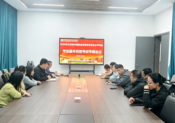
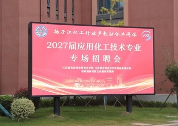
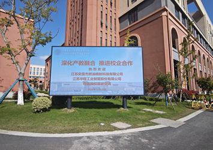

借书、自习、查资料，也躲一场雨。三年、五年读下来，待得最久的地方往往不是教室，而是靠窗那排桌子——晚自习前的两小时，这里最安静。
由此 · 恒心
江苏省张家港中等专业学校
江苏联合职业技术学院张家港分院
1980 年开始办班，1984 年正式建校，校名为江苏省张家港职业教育中心校。那时候的校舍还是借的。
建校第四年通过国标省重点验收。苏南乡镇的职教，从这一步开始有了自己的样子。
1994 年建中专，两年后进入全国首批国家级重点职业高中行列，招生范围第一次跨出张家港。
1998 年成为首批省职教中心校，2009 年再进一步。实训楼就是那几年一间间盖起来的。
2014 年成为首批国家中职改革发展示范校，次年升格分院。五年一贯制，从这一年开始招。
2018 年成为省现代化示范性职业学校，两年后入选省领航计划。数控、机电、软件三个专业群先后立起来。
三百六十亩、二十一万平方米。数控、机电、软件、汽车、化工的实训基地一次配齐，十个校内基地全搬了进来。
一条长卷，从 1984 铺到今天
图 / 学校官网
数字是最简单明了的。
0亩
校园占地
2024 年 7 月整体迁入福新路 2 号
0万㎡
建筑面积
教学、实训、生活三区连成一片
0个
中高职专业
省品牌专业 4、省示范专业 5、省现代化专业群 3
0个
在校班级
在校学生 6200 余人
0名
专任教师
省名师工作室 2 个、苏州市名师工作室 5 个
0个
校内实践基地
数控技术应用为国家级实训基地
0金
全国职业院校技能大赛
另获 26 银 5 铜
0届
张家港市技能竞赛金杯
连续 10 年省技能大赛先进学校
想看哪一站，点开——这里在做什么、用什么设备、跟哪些企业一起带学生。看完一站，再点下一站。
借书、自习、查资料，也躲一场雨。三年、五年读下来，待得最久的地方往往不是教室，而是靠窗那排桌子——晚自习前的两小时，这里最安静。
由此 · 恒心
数控技术应用实训基地是国家级基地，机电一体化技术、软件与信息服务、加工制造技术是省现代化实训基地。设备一排排摆开，学生按工位轮转，一人一机；基地同时面向企业做职工培训和技能鉴定——港城的车间里，有不少师傅是从这里出去的。
由此 · 红心
按教学与实训一体化标准建，产、学、研、训、赛、考一体，实训生产化——做出来的件是要过检验的。苏州市现代学徒制试点 7 项、优秀企业学院 3 个，都在这条线上落地：人在校就是学徒，师傅来自车间。
由此 · 匠心
计算机、软件与信息服务在这里上课。写代码、架服务、做界面，机房的灯常常亮到很晚。你现在看的这个“云探校”，也是照这个路子做出来的——没有视频、没有插件，一个文件发出去，手机和电脑都能走完全程。
由此 · 创心
塑胶跑道、球场、看台。体育课、晚跑、班级联赛都在这里。这所学校连续二十三届拿张家港市技能竞赛金杯，运动会也是同一个脾气——上场就得拼。
由此 · 恒心
食堂、超市、宿舍挤在生活区，和教学区只隔一条路——吃饭、回宿舍、再回教室，一天下来走不了几步。住校生的作息从六点半开始，熄灯后走廊里还有人在背单词。
由此 · 仁心
全国职业院校技能大赛累计 78 金 26 银 5 铜；连续二十三届市赛金杯；连续十年省技能大赛先进学校。展厅里除了奖牌，还有学生的作品——服装、模型、界面、视频，都是能拿出来看的东西。
由此 · 匠心
省品牌专业 4 个、省示范专业 5 个、省现代化专业群 3 个。点开任意一个系部，看它做什么、用什么设备、跟哪些企业一起带学生。
数控技术应用实训基地为国家级基地；汽车运用与维修、加工制造技术为省现代化实训基地。
机电一体化技术为省现代化实训基地；自动化控制技术为苏州市公共实训基地。
软件与信息服务为省现代化实训基地。这一版“云探校”，就是这个系部的学生作品方向。
财贸实训基地为省级实训基地；与扬子江职教集团内 45 家骨干企业共建实习岗位。
与张家港保税区化工园、德国瓦克化工学院深度合作办学，双语教学与职业培训考证同步开展。
开始办班。
正式建校。
成为首批国家级重点职业高中。
首批省四星级中等职业学校、省高水平示范性职业学校。
首批国家中等职业教育改革发展示范校。
升格为江苏联合职业技术学院张家港分院。
获批江苏省领航学校建设单位。
整体搬迁至福新路 2 号，三百六十亩新校区启用。



技校的价值，一半在教室里，一半在车间和招聘会上。以上三则来自学校官网近期发布。
招生季发一个链接，家长在手机上就能把学校看完；到现场那天，只需要确认一件事——孩子喜不喜欢这里。
把这条链接转给家长，七站走完大约十几分钟。看完还有问题，记下来，现场问。
待定
| 场次与时间 | 待定 |
|---|---|
| 集合地点 | 待定 |
| 当日流程 | 待定 |
开放日的场次、流程与集合安排都还没定，以学校当年公告为准。